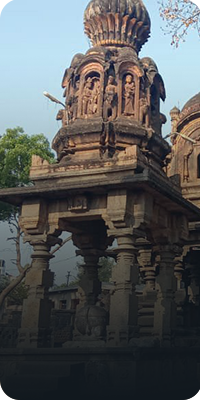
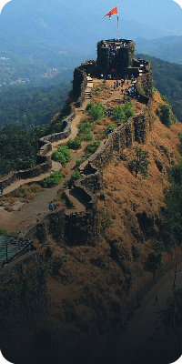
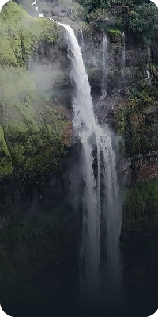
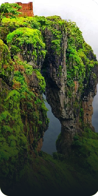
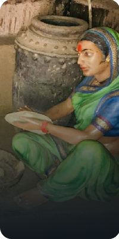

EXPLORE SATARA

Historical Places

Forts

WaterFall

Hill Station

As one of Maharashtra’s most visited tourist destinations, Satara is known for its historical significance and abundance of ancient forts, temples, and museums. When visiting Satara, there are numerous options for adventure seekers, nature enthusiasts, and travellers alike. The seven forts (Sat-Tara) are the source of the city’s name, five among which are must-see for tourists, namely, Ajinkyatara, Pratapgad, Bhushangad, Kamalgad, and Sajjangad. The old cultural and natural treasures of Satara include lakes, stunning waterfalls, bird sanctuaries, plateaus and some of the district's most popular tourist attractions. Ancient structures, including forts and temples, are celebrated in Satara. In addition, the Kaas Flower Plateau, a World Heritage Site, and beautiful waterfalls are additional features.